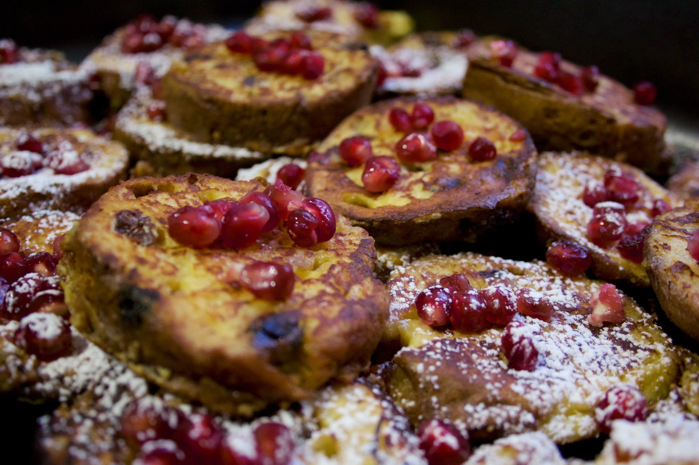

-
Costeletas de Cordeiro com Hortelã e Batatas Douradas
Ingredientes
. 500 G de Batatas com cascas cortadas ao meio
. 8 Coxas de frango com pele e osso
. 8 linguiças italianas
. 1 galho pequeno de alecrim
. Cascas de limão Siciliano
. 1 colher de chá de sal marinho em flocos
. 100 G de rucula para srvio
. 4 colheres de sopa de azeite de oliva
Modo de Preparo
Coloque no vapor as batatas cortadas ao meio.
Usando uma costela espalhe o azeite misturado com os temperos e junte todas as costelas
Aqueça uma panela com fundo grosso e coloque todas as colstelas e frite em fogo medio por 5 minutos.
Usando uma pinça vire as costelas e cozinhe por mais 3 minutos, forre o fundo de uma travessa com rucula e coloque as costelas sobre
Despese as batatas cozidas na panela e frite por 3 minutos de cada lado, aproveite toda a gordura quente e temperada.
Com uma espatula, transfira as batatas para a travessa das costelas e tempere com uma colher de cha de sal marinho e junte com a salsa e hortelãs picadas, pronto para servir. (Nigella Lawson)